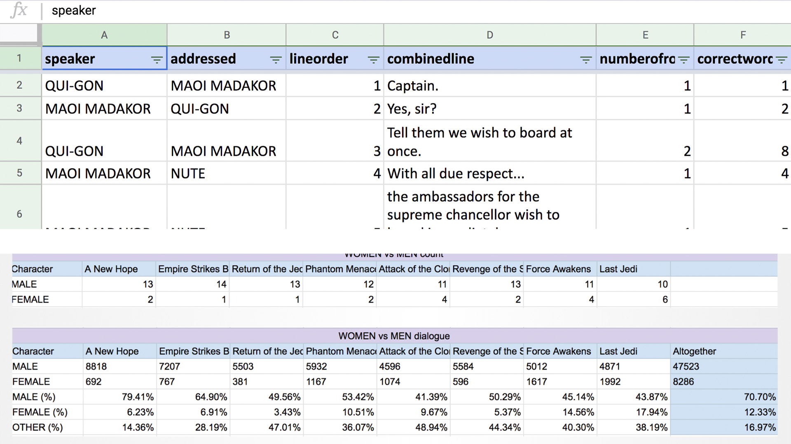

Star Wars: The Rise of Skywalker was going to end the latest trilogy in the popular “Star Wars” series. It was important for the Times to do what we could to cover the even before the release of the film.
We went through brainstorming sessions to figure out what we wanted to explore on the page. Ultimately, we settled on comparing Rey, the first female protagonist in the series, to other leads.
To make a reasonable comparison, we decided to explore how script writers handled Rey. We did this by counting words characters spoke, how and what they told each other, and more.
Daisy Ridley performs as Rey in “Star Wars: Rise of Skywalker” (Lucasfilm/Disney/Sky)
In 2019, Star Wars was set to release their latest film that would end the trilogy which started with Star Wars: The Force Awakens. As the first female protagonist in the series, we decided to look at how scriptwriters have handled her trilogy as compared to the men.
The basic flow of this project was first creating a purpose for our information - why exactly were we creating data based on words spoken? Is it fair to use this as a measure for Rey's worth in the trilogy? Afterall, there are different variables that can affect how much a character speaks. To explain this, a good structure to the peace was imperative - starting from a wider view of the star wars universe in general, to just the women, and finally, to Rey herself. Our staff writer, Tracy Brown was able to smoothly write this story in a way that made everything come together seamlessly.
We wanted to show the primary stakeholders in this problem space - it is not just the home owners who are affected but also goverment workers, scientists, and everyday beach-goers.
We also wanted to show how difficult it is to convince actual homeowners to leave their property, even with a sizable financial incentive.
Finally, we wanted to demonstrate just how hairy this process is. It’s not an easy solution, even though scientist insist that it’s the only one.
Boards show initial mid-fidelity mock-ups (Swetha Kannan / Los Angeles Times)
We spent hours figuring out which characters spoke the most and thus needed to be included on the page (Swetha Kannan / Los Angeles Times)
After exploring the problem space, we made several mockups to present to stakeholders in the newsroom. I initially started with a city-scape in a mockup which was wuickly shot down by experts - we instead changed the final landscape to flat land with roads and villas, more typical of the Southern California coast.
We playtested the game with several users and, once we were happy with the text, we began transferring the game to our in-house CMS system. To do this, I used Cinema 4D to make all the 3D elements you see in the game and then used After Effects to create all the animations.
We exported these animations into Javascript animations by using the the Bodymovin library.
Some of the biggest elements of the game that we continuously iterated upon was the characters we included that were meant to visualize the stakeholders in the problem space. These characters would occasionally offer commentry on what the user was doing.
Another big element was the buyback system where users would be able to offer financial incentive. We tried to model these scenerios after real ones we encountered in our interviews to make it as realistic as possible.
The story published alongside it’s written version on July 7th, 2019.
The page published to great success. It was met with steady and increasing traffic for a week, a time frame almost unheard of in a fast-paced news cycle, and was one of our top viewed project pages of the year. Beyond the initial publishing week, the game has been used by professionals to teach students about the complexities of our beaches and to train local city officials before they began their duties assisting the development of beachside neighborhoods.
2020 Online Journalism Award, Finalist
2019 California Online Journalism Awards, 3rd place in Public Service Journalism
2019 California Online Journalism Awards, 2nd place in In-depth reporting